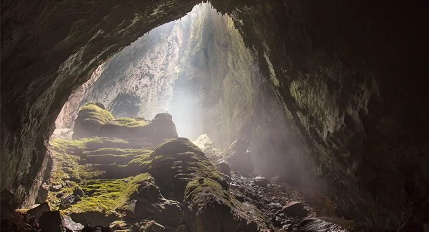

Considerada a maior caverna do mundo, ela foi descoberta somente em 1991, por um fazendeiro que habitava a região. Sua extensão é de 140 quilômetros e, em certo trecho, ela possui espaço suficiente para abrigar um edifício de 40 andares. Em seu interior, existem espécies vegetais e animais que só são encontradas ali.